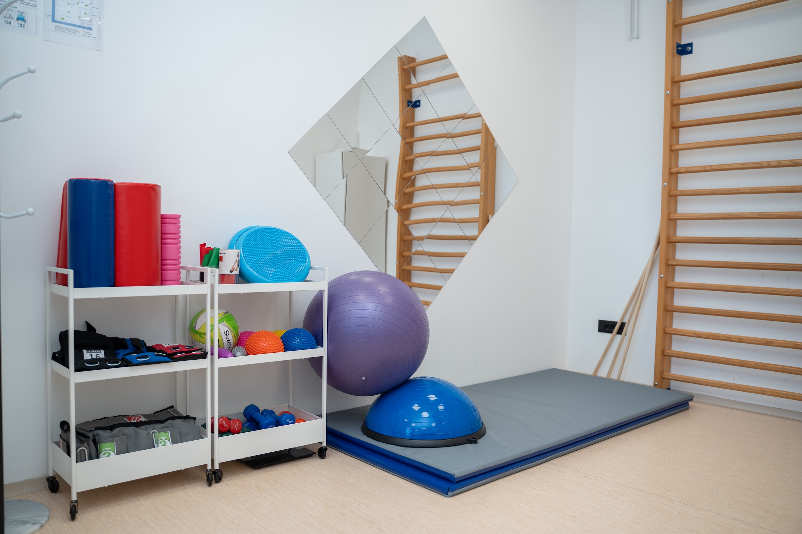
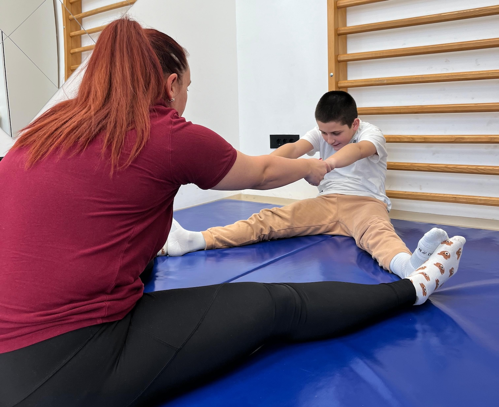
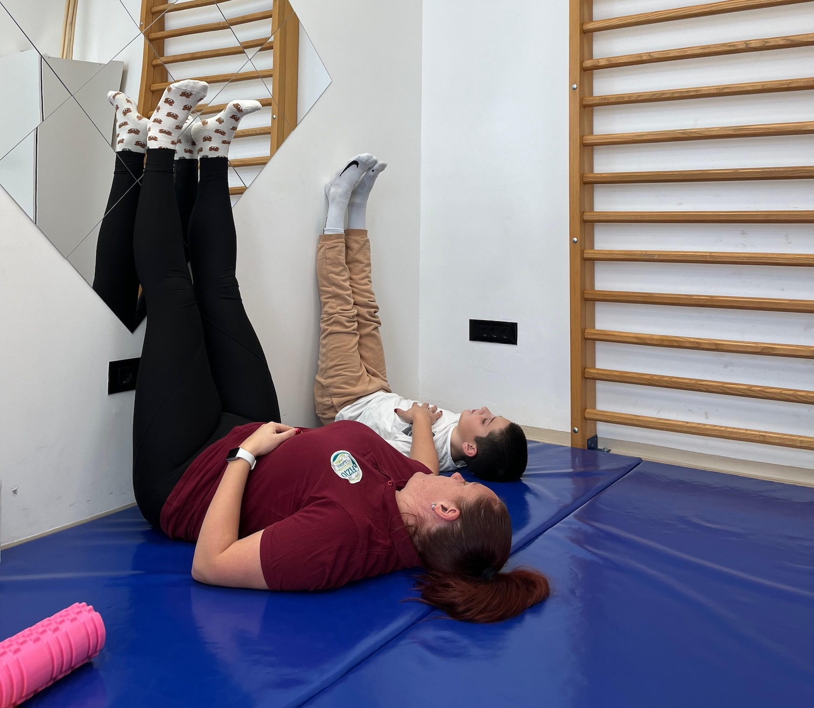
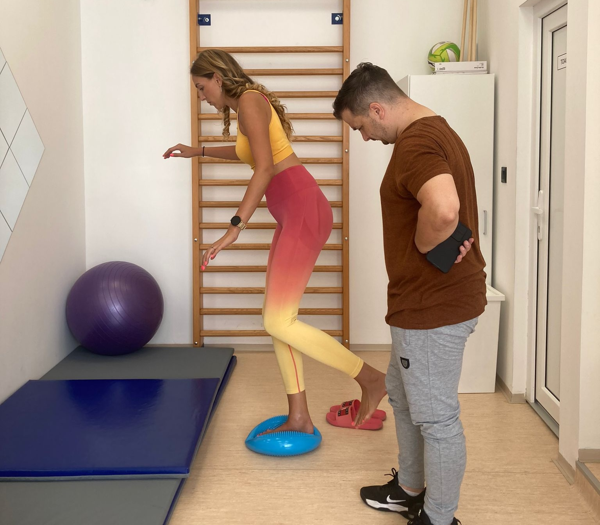

Kineziterapija
Uređaji: —
Vođene vežbe snage, mobilnosti, stabilizacije i kontrole pokreta sa progresivnim opterećenjem. Program se individualno prilagođava dijagnozi, nivou aktivnosti i ciljevima (oporavak, prevencija povreda, ergonomski savet).
Indikacije
- Rehabilitacija nakon povreda i operacija
- Hronični bol i posturalne disfunkcije
- Povećanje snage, izdržljivosti i stabilnosti
Šta da očekujete
Procena pokreta i izrada plana vežbi sa jasnim uputstvima; progresija opterećenja i praćenje rezultata.



